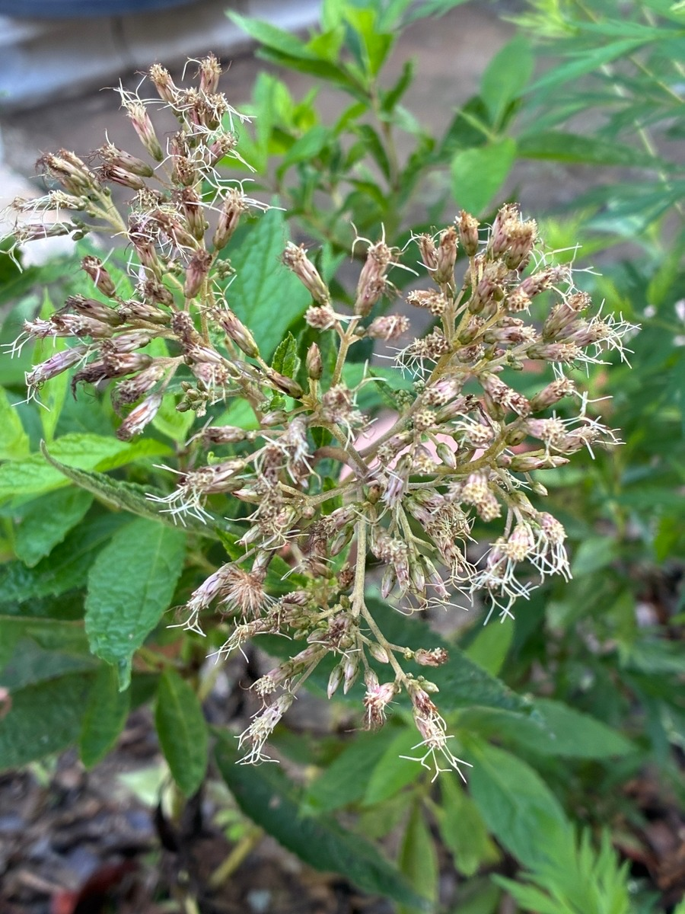

ベイビージョー 生育記録｜2025年9月20日
最初の花が終わり
新しい葉が成長
地植えから約1か月と10日。株は一回り大きくなり、新しい葉も増えてきました。

最初の花が終わり、新しい葉が成長
2025年8月9日に地植えしたユーパトリウム・ベイビージョーです。植え付けから約1か月と10日が経過しました。
成長の速さは今のところ普通といった印象で、急激に大きくなった感じはありませんが、購入した頃と比べると株全体が一回り大きくなり、新しい葉も増えてきました。茎もしっかりとしていて太く、株自体は順調に育っているように見えます。
購入した8月9日の時点では、5株のうち3株に合計4房の花房があり、ちょうど蕾から花が開き始める段階でした。
今回の写真を見ると、そのときから咲いていた花は、ほぼ咲き終わりを迎えたようです。ベイビージョーは蕾の頃からピンク系の色合いがあり、開花中もやさしいピンク色を楽しむことができました。
一方で、新しい葉は出てきているものの、今のところ新たな蕾は確認できません。
これから秋に向かってさらに新しい花が上がってくるのか、それとも今年の開花はここで一区切りになるのか、引き続き観察していきます。
0 件